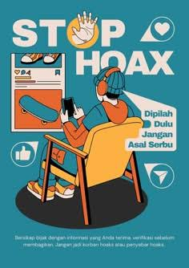
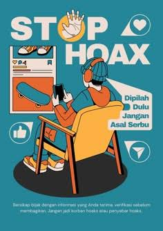

BIJAK BERMEDIA SOSIAL , JANGAN ASAL SEBAR
.jpeg)
Kesadaran bijak dalam bermedia sosial mencakup pemahaman tentang dampak dari setiap
tindakan dan kata yang diunggah. Dengan meningkatnya kekuatan informasi di media sosial,
setiap unggahan memiliki potensi besar untuk memengaruhi opini publik,memicu diskusi,
atau bahkan memicu perubahan sosial. Oleh karena itu,penting bagi pengguna media sosial untuk
menyadari implikasi dari setiap tindakan mereka,baik itu dalam hal menyebarluaskan informasi,
berbagi pendapat, atau berinteraksi dengan orang lain.
Untuk menjadi pengguna media sosial yang bijak dan tidak asal menyebar konten, verifikasi informasi dari
sumber terpercaya sebelum membagikannya, jaga privasi diri dengan tidak mengumbar data pribadi,
hindari konten negatif seperti SARA, pornografi, atau kekerasan, gunakan bahasa yang sopan, dan laporkan
konten negatif yang melanggar aturan. Selain itu, terlibatlah dalam diskusi positif dan batasi waktu
penggunaan media sosial agar tidak kecanduan.
 

1. Menciptakan Kepanikan dan Ketakutan Hoaks yang menyangkut isu kesehatan, bencana, atau
keamanan sering kali menimbulkan kepanikan yang tidak perlu di masyarakat.
2. Memecah Belah Masyarakat Hoaks yang berkaitan dengan isu SARA dapat memicu konflik sosial dan
memperburuk hubungan antar kelompok dalam masyarakat.
3. Merusak Reputasi Individu atau Institusi Seseorang atau institusi yang menjadi
sasaran hoaks bisa mengalami kerugian reputasi yang sulit diperbaiki.
4. Menyesatkan Pengambilan Keputusan Hoaks yang menyangkut informasi politik atau
kebijakan publik dapat mempengaruhi opini masyarakat secara keliru dan berakibat buruk
pada proses demokrasi.
1.Periksa Sumber Informasi
- Pastikan informasi berasal dari sumber yang kredibel dan dapat dipercaya.
2.Lakukan Verifikasi Fakta
- Gunakan situs pemeriksa fakta seperti CekFakta, Mafindo, atau lembaga resmi lainnya.
3.Jangan Terburu-buru Menyebarkan Informasi
- Sebelum membagikan sesuatu, pertimbangkan dampaknya bagi masyarakar
4.Laporkan Konten Hoaks
- Jika menemukan hoax, laporkan ke platform media sosial atau ke pihak berwenang agar dapat ditindaklanjuti.
“Mari bersama sama menyebarkan hal positif di
media sosial agar menjadi ruang yang bermanfaat,
bukan tempat menyakiti”